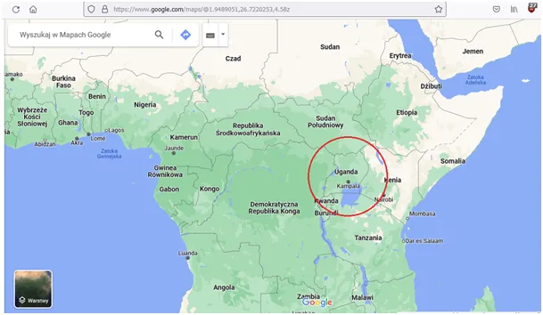

Czy Afryka będzie fabryką świata dla Chin ?
Docierają do nas wieści o licznych konfliktach w Afryce, ostatnio z Sudanu. Możemy się spodziewać, że to rozgrywki mocarstw na cudzej ziemi. W Afryce jest wiele rzadkich bogactw naturalnych, ale jest też coś cenniejszego: przyszłość, czyli dzieci. W Ugandzie zatwierdzono dożywocie za praktyki homoseksualne, oburzony zachód zagrzmiał.
Co ciekawe na wiecu w tej sprawie wystąpili ramię w ramię obok siebie chrześcijanie i muzułmanie podkreślając, że rolą małżeństwa w społeczeństwie jest dzietność. Tylko nowe pokolenie jest gwarantem egzystencji seniorów. Drugorzędną kwestią jest czy poprzez system emerytalny czy przez wspólne gospodarstwo domowe, gdzie dziadkowie dopełniają swych dni przy wnukach. Niby oczywista oczywistość, ale jest solą w oku "kolektywnego zachodu". Chiny przechodzą kolejny kryzys demograficzny, ich populacja jest w fazie stagnacji, tymczasem Afryka to demograficzny boom. Gdy w Chinach klasa średnia nie będzie chciała już pracować w fabrykach na 3 zmiany Afryka będzie idealnym miejscem z tanią siłą roboczą. Skromne warunki afrykańskich rodzin powodują, że ich kultura ciągle jest bliska sacrum. Islam jest w ofensywie i wykorzystuje skrajnie odmienny system wartości zachodu, aby polaryzować nastroje. Znamienna jest wypowiedź miejscowego arystokraty w kwestii homoseksualizmu: „Zanim ktokolwiek wprowadzi w błąd człowieka kierowanego przez Boga Wszechmogącego, niech najpierw przekona zwierzęta bez takiej świadomości i przewodnictwa, aby robiły to, co promują” – powiedział szejk Mubajje.

Zwierzęta w tamtym świecie są bardzo blisko człowieka, a ich najcenniejszą cechą jest płodność. Duże rodziny, żyją często tylko ze stale odradzającego się stada kóz, czy owiec. Mleko, ser, mięso, wełna, perpetuum mobile, bez etatu i bez vatu, ten cud działa od początku świata.
Źródło
Paweł Klimczewski